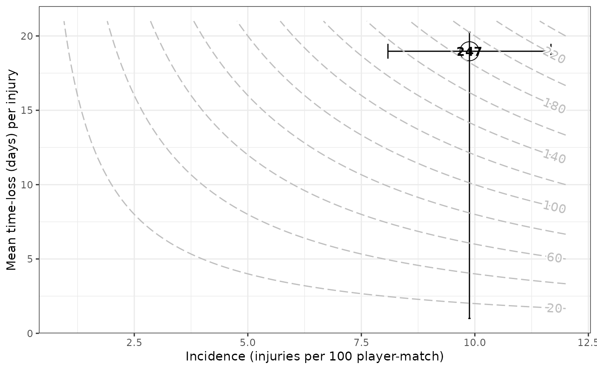
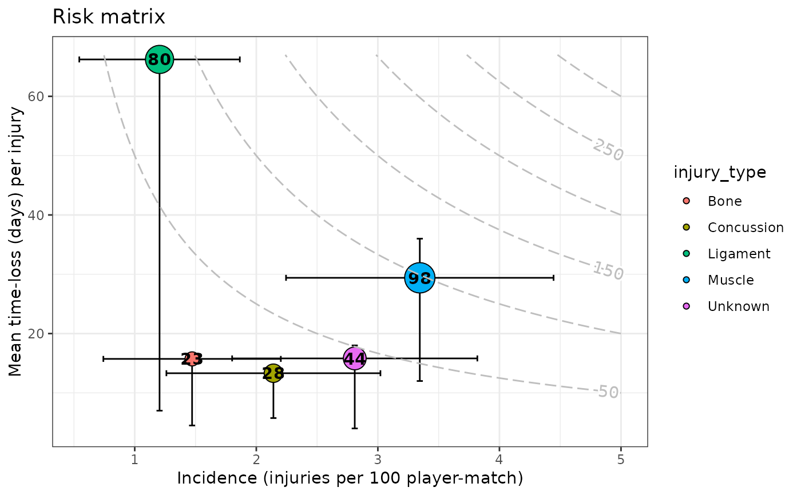

Given an injds S3 object, it depicts risk matrix plots , a
graph in which the injury incidence (frequency) is plotted against the
average days lost per injury (consequence). The point estimate of injury
incidence together with its confidence interval is plotted, according to the
method used when running injsummary() function. On
the y-axis, the mean time-loss per injury together with \(\pm\) IQR (days)
is plotted. The number shown inside the point and the point size itself,
report the injury burden (days lost per player-exposure time), the bigger the
size the greater the burden. See References section.
Usage
gg_injriskmatrix(
injds,
var_type_injury = NULL,
add_contour = TRUE,
title = NULL,
xlab = "Incidence (injuries per _)",
ylab = "Mean time-loss (days) per injury",
errh_height = 1,
errv_width = 0.05,
cont_max_x = NULL,
cont_max_y = NULL,
...
)Arguments
- injds
injdsS3 object (seeinjsummary())- var_type_injury
Character specifying the name of the column. A (categorical) variable referring to the "type of injury" (e.g. muscular/articular/others or overuse/not-overuse etc.) according to which visualize injury summary statistics (optional, defaults to
NULL).- add_contour
Logical, whether or not to add contour lines of the product between injury incidence and mean severity (i.e. 'incidence x average time-loss'), which leads to injury burden (defaults to
TRUE).- title
Text for the main title passed to
ggplot2::ggtitle().- xlab
x-axis label to be passed to
ggplot2::xlab().- ylab
y-axis label to be passed to
ggplot2::ylab().- errh_height
Set the height of the horizontal interval whiskers; the
heightargument forggplot2::geom_errorbarh().- errv_width
Set the width of the vertical interval whiskers; the
widthargument forggplot2::geom_errorbar().- cont_max_x, cont_max_y
Numerical (optional) values indicating the maximum on the x-axis and y-axis, respectively, to be reached by the contour.
- ...
Other arguments passed on to
ggplot2::geom_contour()andmetR::geom_text_contour(). These are often aesthetics likebins = 15orbreaks = 10.
References
Bahr R, Clarsen B, Derman W, et al. International Olympic Committee consensus statement: methods for recording and reporting of epidemiological data on injury and illness in sport 2020 (including STROBE Extension for Sport Injury and Illness Surveillance (STROBE-SIIS)) British Journal of Sports Medicine 2020; 54:372-389.
Fuller C. W. (2018). Injury Risk (Burden), Risk Matrices and Risk Contours
in Team Sports: A Review of Principles, Practices and Problems.Sports
Medicine, 48(7), 1597–1606.
https://doi.org/10.1007/s40279-018-0913-5
Examples
# \donttest{
df_exposures <- prepare_exp(raw_df_exposures, player = "player_name",
date = "year", time_expo = "minutes_played")
df_injuries <- prepare_inj(raw_df_injuries, player = "player_name",
date_injured = "from", date_recovered = "until")
injd <- prepare_all(data_exposures = df_exposures,
data_injuries = df_injuries,
exp_unit = "matches_minutes")
# }
# \donttest{
injds <- injsummary(injd)
#> Warning:
#> Exposure time unit is matches_minutes
#> So... Injury incidence and injury burden are calculated per 100 player-matches of exposure (90 minutes times 100)
#>
#> Warning:
#> Exposure time unit is matches_minutes
#> So... Injury incidence and injury burden are calculated per 100 player-matches of exposure (90 minutes times 100)
#>
injds2 <- injsummary(injd, var_type_injury = "injury_type")
#> Warning:
#> Exposure time unit is matches_minutes
#> So... Injury incidence and injury burden are calculated per 100 player-matches of exposure (90 minutes times 100)
#>
#> Warning:
#> Exposure time unit is matches_minutes
#> So... Injury incidence and injury burden are calculated per 100 player-matches of exposure (90 minutes times 100)
#>
gg_injriskmatrix(injds)

gg_injriskmatrix(injds2, var_type_injury = "injury_type", title = "Risk matrix")
#> Warning: An injury average time-loss is bigger than its 75% quartile
#> time-loss. Possibly, there is a concrete long-term injury in the data.
#> For plotting purposes the vertical upper limit (i.e. 75% quartile)
#> is lengthened to the average value.

# }